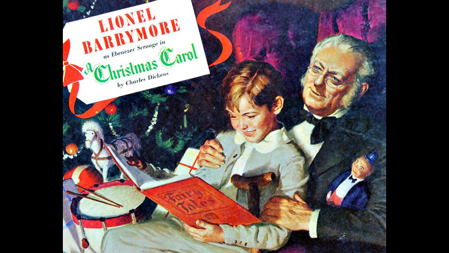

| Character | Actor |
|---|---|
| Ebenezer Scrooge | Lionel Barrymore |
| Narrator | Orson Welles |
Plus: Ray Collins, Frank Readick, Everett Sloane
Lionel Barrymore starred as Scrooge in a dramatisation on the CBS Radio Network on 25 December 1934, beginning a tradition he would repeat on various network programmes every Christmas through 1953. Only twice did he not play the role: in 1936, when his brother John Barrymore filled in because of the death of Lionel's wife and again in 1938, when Orson Welles took over the role because Barrymore had fallen ill. The above cast-list dates from 1939 when Orson Welles returned to be the Narrator.